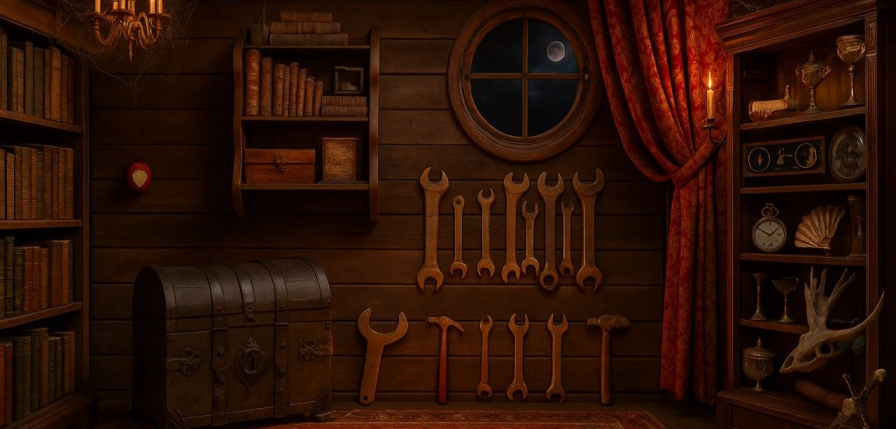

Аннотация проекта
Данный проект посвящён разработке Telegram-бота "Подземелья Политеха" - точка входа в проект, объединяющий шоу «Бросок в бездну», настольные игры, лор мира и игровые активности. Через него можно быстро находить эпизоды и закулисье, изучать вселенную проекта, знакомиться с правилами настольных игр и записываться на плейтесты и игровые встречи.

Бот создан для удобной навигации по всем материалам проекта и участия в его развитии без необходимости искать информацию по разным источникам.